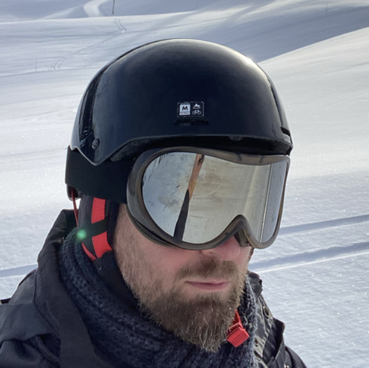
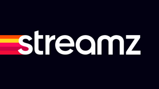

Building live & video-on-demand streaming platforms for millions of viewers. Freelance developer and tech enthusiast, based in Antwerp, Belgium.

At DPG Media, I've built the streaming platform that powers VTM GO, Streamz and RTL Play — together with my team, from scratch.
The platform handles both video ingestion (encoding, packaging, DRM, SSAI) and the backend for video playback, serving live TV and on-demand content to millions of viewers across Belgium and the Netherlands.
Previously, I also built the streaming platform for Stievie during my time at Medialaan.

StievieNode.js & TypeScript across Lambda functions and ECS services
Transcoding, packaging, DRM protection and server-side ad insertion
Async messaging between microservices for resilient, scalable workflows
Fully automated deployments and reproducible infrastructure
I'm a highly motivated freelance software developer with a broad technical interest and knowledge. I have most experience with Node.js and the Java platform, but I keep up with other technologies as well.
I'm a pragmatic programmer and an evangelist of Test Driven Development. Delivering clean, bug-free code is my primary goal. Over the years I've worked across media, banking, government, healthcare, and transport sectors.
I have a long-standing passion for Linux and the open source ecosystem. I also enjoy experimenting with AI and LLMs — exploring tools like Claude Code and building small projects to see what's possible at the intersection of software engineering and AI.
Outside of work, I'm a marathon runner and a proud dad of Famke and Sam.
A broad stack accumulated over two decades of production software development.
Two decades across media, banking, government, healthcare, and railways.
Building the live & video-on-demand streaming platform that powers VTM GO, Streamz and RTL Play — built from scratch with my team. The platform covers video ingestion (encoding, DRM, SSAI) and the backend for video playback.
After almost 10 years of Java EE, I switched to Node.js. Led development of the online video platform (live & VOD) powering Stievie Free and VTM.be. Also built a real-time voting backend for TV programs (Belgium Got Talent, The Voice), an Electronic Program Guide, and a GraphQL API to unify backend services.
Organised official nodeschool.io sessions, sharing Node.js knowledge with the developer community. Topics: Node.js basics and Node.js Streams.
Spring/Hibernate/Maven project where I first embraced TDD and pair programming. Worked in a Scrum team on eCIP (barcode & RFID packet tracing) and UMMS (measuring postal operator performance via test letters).
Developed the MAGDA platform: a SOAP web services platform for data exchange between government applications, and a framework for async data distribution to consumers.
Built and maintained J2EE applications for ING's online banking activities, including a CRM suite for a single customer view and Consumer Loans Online.
Worked on embedded Java software for medical printers — building the LCD display UI and the remote management web application.
Developed a desktop application for planning Dutch railway infrastructure usage (Eclipse RCP / SWT) and a data warehouse (Microsoft SQL Server) to track project status.
Building tools for others and giving back to the ecosystem.
Needed a tool to manage MongoDB database migrations — couldn't find a decent one, so I wrote it myself in Node.js. Now used by thousands of projects worldwide.
1k stars on GitHub github.com/seppevs/migrate-mongoMade contributions to several open source projects including Node.js, Mocha, Sinon, Express, and Homebrew.
Bachelor Applied Computer Sciences — Karel de Grote Hogeschool, Antwerp (2005)
NOW: building live & VOD streaming infrastructure at DPG Media
Not currently available for new projects, but always happy to have a chat.
Reach me at sebastian@vansande.org